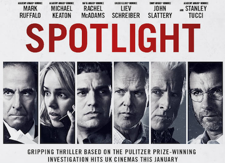

My favourite movie of 2016 is 'Spotlight', which recently won two awards from Oscar as the "Best Motion Picture of the Year" and the "Best writing, Original Screenplay".
This movie is absolutely stunning and inspiring mainly because of its storyline. It illustrates a true story of how the Boston Globe reveal the scandal of child molestation that covered up by local Catholic Archdiocese. Spotlight, a special team within Boston Globe, trace down this scandal until they hold evidences to prove that child molestation has existed throughout a long period and across different states in America, or even in the globe. When a movie can reveal a real issue, it is powerful enough without any special visual effects or Hollywood's a-list cast. (Source:IMDB-"Spotlight")
Nevertheless,the movie is worth watching also because of the great performances delivered by theses actors and actress. They are Mark Ruffalo, Michael Keaton, Rachel McAdams and so on. The whole crews display the real-life of journalists in print media and makes the story convincible.
As a Chinese-born student studied in media, I amaze about that how American journalists bravely uncover social issues and systematic problems. Also, after watching this movie I cannot stop questioning about the differences between the news in digital media and the news in print media. As we can browse massive information online, should we still pay for news to keep the valuable news alive?